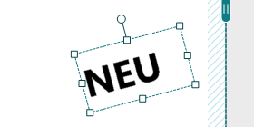
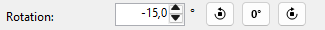
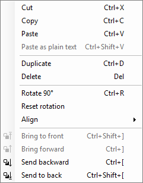
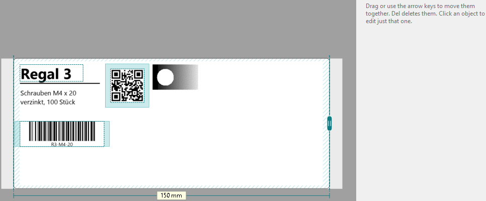
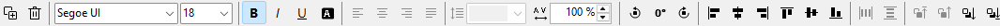
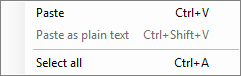

Rotating and arranging
Artistic and paragraph text, shapes and pictures turn to any angle. Line several objects up with the Arrange toolbar.
-
Turn it with the grip
Click the object. A round grip appears above its top edge; it turns with the object (after 90° it is on the right). Drag the grip around; the angle is shown next to the mouse. At 0°, 90°, 180° and 270° it snaps, with a dotted guide.

The handles of a turned object resize it along its own sides.
-
Type the angle
On the right, type an angle from −180° to 180° in the Rotation field. The outer two buttons next to it turn by 90° anticlockwise or clockwise.

-
Reset rotation
The 0° button between the two turn buttons sets the object straight again, also from a free angle such as −15°. It is next to Rotation on the right and in the Arrange toolbar; in the Arrange menu and the context menu it is called Reset rotation.

With several objects selected, all turned ones are set straight. When everything is at 0° already, the command is grey. Ctrl + Z undoes it like any change.
-
Select several objects
Ctrl+click or Shift+click adds or removes an object. Or drag a frame from an empty spot: everything it touches is selected. Selected objects get a dashed frame, and the right side says how many there are.

Clicking a single object edits just that one.
-
Align and distribute
The Arrange toolbar above the canvas holds, from left to right: duplicate and delete, the text group (font, size, B I U, alignment and spacing; see Artistic and paragraph text), turn 90° anticlockwise, reset rotation (0°), turn 90° clockwise, six buttons to align, two to distribute, and the four layer commands. Buttons that can't do anything for the selection are grey. In a narrow window the buttons at the end move behind ».

A single object aligns with the printable area. Several objects align with each other: Align left moves them all to the left edge of the leftmost object. Each button's tooltip adds "with the printable area" or "with the selection".
Distribute horizontally and Distribute vertically need three or more objects. They make the gaps equal; the first and the last object stay where they are. Objects that overlap get equal distances between their centres.
The Arrange menu has the same commands.
-
What's on top? Layers
An object added later covers the earlier ones. To change that, use Bring to front, Bring forward, Send backward and Send to back: in the toolbar, in the Arrange menu, and by right-clicking the object.
An object's context menu also has Cut, Copy, Paste, Duplicate, Delete, Rotate 90°, Reset rotation and Align. Right-click an empty spot to paste there.
